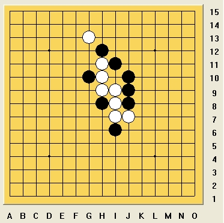

再出一题VCT
首页
习题专区
#1 再出一题VCT 作者：逆刃 发表时间：2009-3-10 17:27:50

出题送威望，最先答对的奖励威望。
［本站用户 无尽 于 2009-3-10 19:09:25 花5个金币送您鲜花一朵］
［ 无尽 于 2009-3-10 21:15:56 时奖励此帖[金币加 20 威望加1］
#2 Re:再出一题VCT 作者：就是爱玩 发表时间：2009-3-10 17:46:56
=======上图对应的爱五子棋谱代码如下，以便你拆解：========
h12h11i11g13j10h10g10h9h8i9j9i8i6i7j8j7j12j11k12i12k10k9m12
======================================================
=======上图对应的爱五子棋谱代码如下，以便你拆解：========
h12h11i11g13j10h10g10h9h8i9j9i8i6i7j8j7j12j11k12i12k10k11m10
======================================================［本站用户 逆刃 于 2009-3-10 17:51:25 花5个金币送您鲜花一朵］
要是VCT哦。
#3 Re:再出一题VCT 作者：就是爱玩 发表时间：2009-3-10 17:54:20
连续攻击取胜吗？
我再看看。
#4 Re:再出一题VCT 作者：就是爱玩 发表时间：2009-3-10 18:28:33
遇到一个盘端问题
只找到一楼的方法，还不是VCT哦。
VCT的方法暂未找到。
#5 Re:再出一题VCT 作者：游戏人间 发表时间：2009-3-10 18:51:58
=======上图对应的爱五子棋谱代码如下，以便你拆解：========
h12h11i11g13j10h10g10h9h8i9j9i8i6i7j8j7k12j12k10k11m10l10m9n9m8m7j11i13h14l9m12m11l11n13l13m14k14n11i14
======================================================
#6 Re:再出一题VCT 作者：无尽 发表时间：2009-3-10 18:58:42
大鱼好快，而且正解
#7 Re:再出一题VCT 作者：逆刃 发表时间：2009-3-10 18:59:48
28-30呢？我知道LS的肯定是有解了，希望能多贴两个图。
#8 Re:再出一题VCT 作者：游戏人间 发表时间：2009-3-10 19:02:15
=======上图对应的爱五子棋谱代码如下，以便你拆解：========
h12h11i11g13j10h10g10h9h8i9j9i8i6i7j8j7k12j12k10k11m10l10m9n9m8m7j11l9l8k9i13
======================================================［ 逆刃 于 2009-3-10 19:20:19 时奖励此帖[金币加 20 威望加1］
#9 Re:再出一题VCT 作者：游戏人间 发表时间：2009-3-10 19:02:42
不冲肯定就是抢冲的位置了。。。
#10 Re:再出一题VCT 作者：无尽 发表时间：2009-3-10 19:09:16
逆刃这两题都不错，有好题再拿出来玩。
#11 Re:再出一题VCT 作者：就是爱玩 发表时间：2009-3-10 20:23:21
学习了！
#12 Re:再出一题VCT 作者：刀魂 发表时间：2009-3-11 9:56:54
5楼的 强人一个，
#13 Re:再出一题VCT 作者：剑魔令狐冲 发表时间：2009-3-12 4:27:41
LS的解答确实很精彩 但是我对VCT的定义还搞不清楚 23手那里 即没做43杀 也没活3 挡白子的活3 也是VCT的 一个过程吗 请给VCT进攻一个确切的定义 谢谢LS
#14 Re:再出一题VCT 作者：无尽 发表时间：2009-3-12 8:54:49
VCT＝Victory of continuous Threat (我见过的中文资料都望文生义把T当成Three了，英文原意就是Threat，虽然当成Three亦无不可，但会造成概念层次缺失)
意思就是通过连续先手威胁取得胜利，具体手段有五种：活三、冲四、做43、做VCF、做44(白)，最后成五或者抓禁(白)。(上面做杀手段要求都至少包含一个冲四的，做33不算，因为比其他手段都低一个先手等级)
当然也有人认为Threat(威胁)不好，含义不够清晰，或者可以用VC3取代(终结者的设定，按先手等级归类，这里的3就不是活三的意思了，而是表示先手等级的数字)。不过我已经习惯VCT的叫法了，对理解也没有影响。
与上面相对应的还有对先手一词的含义也有人提出疑问。我记得以前看过的书中列出了两种含义：一是指活三、冲四(绝对先手)，二是指主动权。我也接受这种看法，VCT中的先手威胁是指第一种意义上的(做杀与活三属于同一先手等级)。不过现在已经形成了从数学逻辑上对五子棋先手的比较精确定义了~~(略..)
五子棋理论的基础工作还需要不断完善